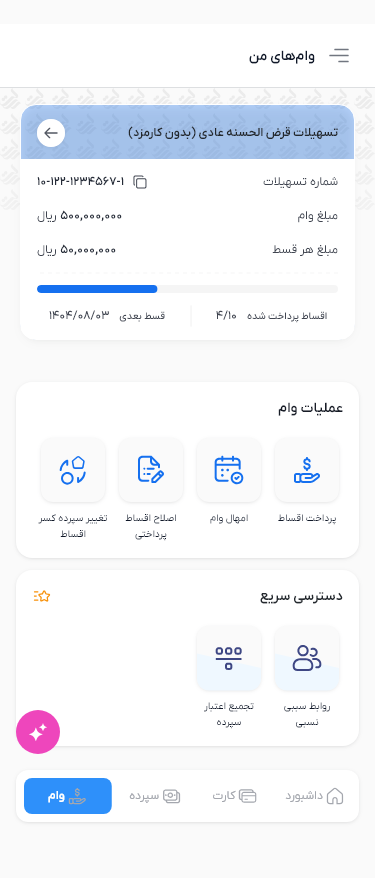
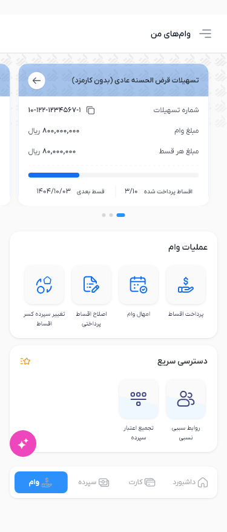

Phase 1 — Single loan

Single and multiple loan states using existing shared components. The existing shadow, header spacing, gray arrow and active loan icon, remain documented differences. Progress fills from the physical left using paid/total counts (40% single; 30%,70%,90% multi). Full Dashboard development document

